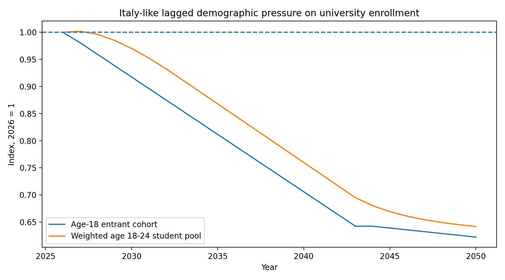
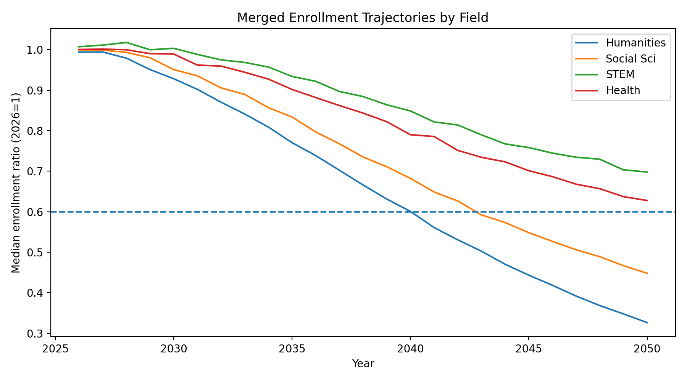
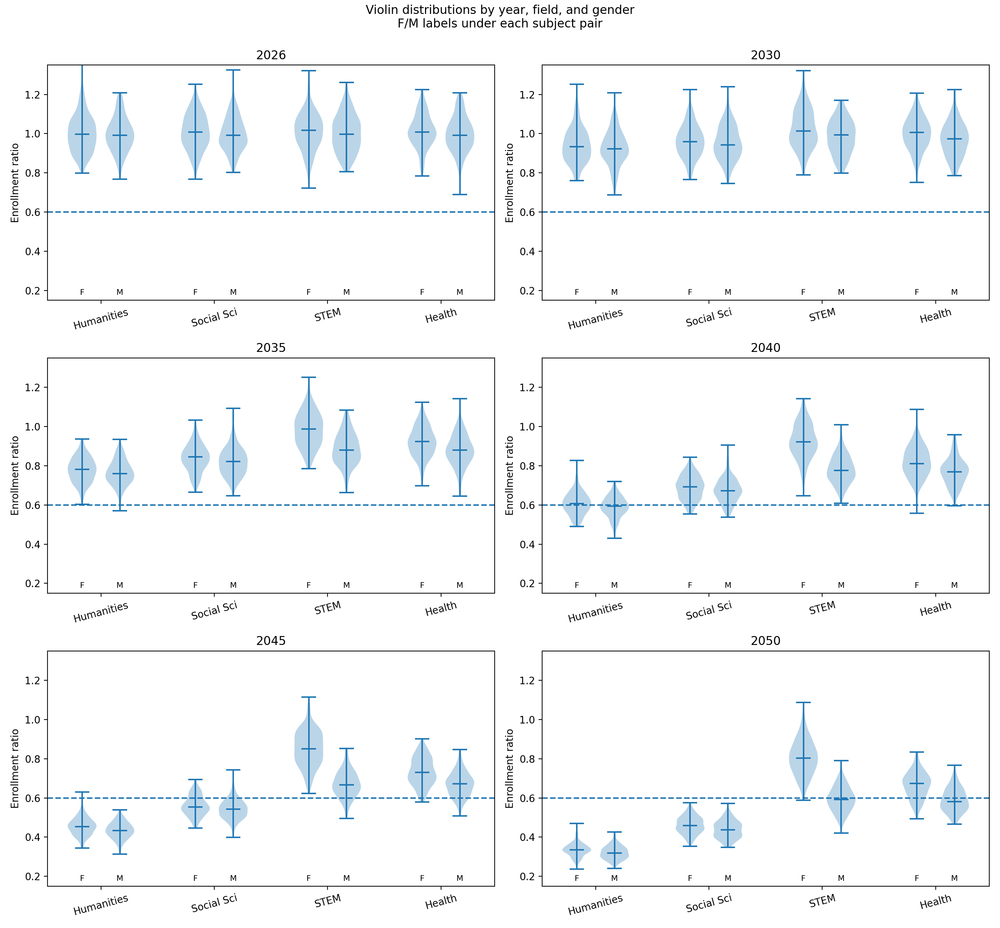
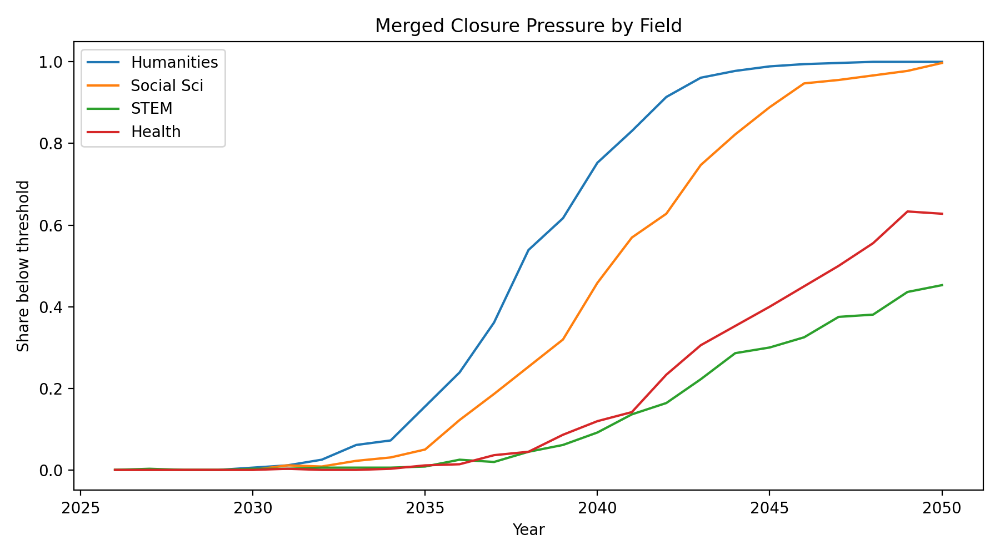
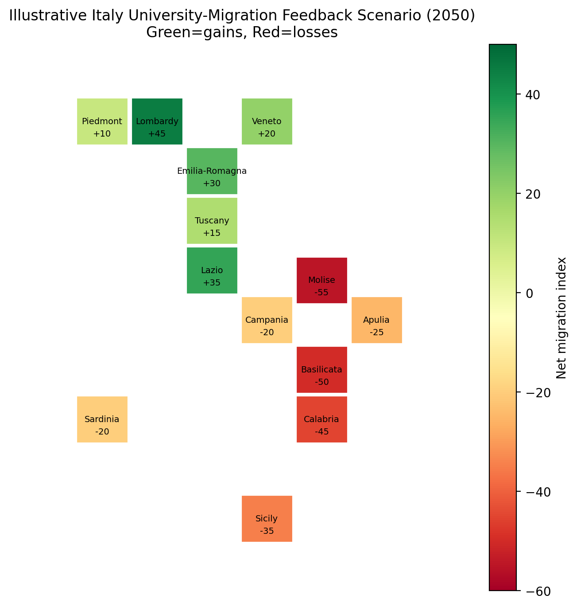

demography • universities • complex systems
From the Demographic Boom to the Demographic Decline
July 15th, 2026
From kindergartens to universities, demographic change behaves like a slow tidal wave. It starts almost invisibly, then arrives everywhere at once.
The day Mel Brooks dies we will lose a great person, one of the last representatives of a cultural world that spanned vaudeville, Hollywood, television, satire, and the twentieth century itself. But his joke also gives a useful image for thinking about aging societies. Europe feels young in its institutions. Its universities feel permanent. Its ministries, faculties, and degree programs feel as if they have always existed and therefore will always exist. Yet many of these institutions were scaled for a demographic world that no longer exists.
Lately I didn't have much time to write, as many things are happening (lots of news at Planckian, moving, holidays etc). However, I started writing this post weeks ago. It was inspired by quite a few conversations I had with some friends and colleagues over the last few weeks and months, and that it was also inspired by a 2 hour documentary on the demographic decline across the world since the '70s (the documentary is worthy, it's on YouTube and it's called Birthgap). "The algorithm" suggested it to me after I watched something else (I don't recall exactly who it was), but some youtubers essentially visiting Japan, in remote areas, and visiting old kindergarten. Actually, many of these small towns were often inhabited by only one person. Now, this to me is not new. I'm from an area of Italy called Calabria. If you heard "Houses for 1 euro in Italy" once, with high probability it was in one of the towns of Calabria. The reason is that many of these towns are now inhabited by only a few people, and the young ones have moved to the cities or abroad. Sometime the areas became too difficult to reach or inaccessible, and a new town was built nearby. A famous example of one of these towns is Pentedattilo here, which is now almost ghost town and that had been inhabited since the Greeks (and gave the name to the town after "five fingers" in greek). Now you see that there are two phenomena that essentially make ghost towns. One is demographic decline, which happens everywhere, the second is emigration. Some friends of mine might have heard me saying this for a few years, but essentially the demographic decline is like a slow tsunami. The tsunamy hits first kindegarten. Then elementary schools, etc etc, till it reaches, after 18 years, universities. The problem is that the demographic decline is not uniform across the world, and it is not uniform across countries. Some countries are more affected than others, and some regions are more affected than others. I wanted to gather some data and make these thoughts a bit more quantitative.. here we go.
1. The demographic tsunami
The reason I like the image of the tsunami is that it captures both the slowness and the violence of the process. A tsunami is not a normal wave. When it is far away, in the open ocean, it can be almost invisible. It does not look dramatic. But the energy is there, moving underneath. Only when it reaches the shore does it become obvious.
Demographic decline has exactly this character. It begins with births, but births are not immediately visible in the institutions we usually care about. A country can have fewer children for many years and still have full universities, because the students sitting in lecture halls were born eighteen or twenty years earlier. The university system is therefore always looking into the past. It is fed by decisions, births, migrations, and family structures that happened almost two decades before.
This is the key lag. If fewer children are born in year $t$, then the effect first appears in kindergartens a few years later, then in elementary schools, then in middle schools, then in high schools, and only after about eighteen years in universities. It is not that the system has no warning. It has plenty of warning. The problem is that the warning appears in another part of the system.
In this sense, the closure of a kindergarten is not only a local story. It is a prediction about the future of the university system. A kindergarten closing today is, in some sense, a university department becoming fragile eighteen years from now. The same cohort is moving through time.
The effect is especially visible in countries such as Italy, where low fertility has now lasted long enough that it is no longer a fluctuation. It is a structural feature. What makes Italy particularly interesting is that the demographic decline is also coupled to migration. Some parts of the country lose young people not only because fewer are born, but because those who are born often leave.

This plot is not meant to be the final word. It is a toy model, but a useful one. The blue curve is the age-18 cohort, which is the cleanest proxy for the new students entering the university system. The orange curve is a weighted 18-24 pool, which better represents the students who are already inside the system. The difference between the two is important. Universities do not collapse the moment the first small cohort arrives. They feel the pressure gradually, because older cohorts are still present. But once several small cohorts accumulate, the decline becomes hard to hide.
That is when demography stops being a statistic and becomes an administrative problem. It becomes a problem of courses that no longer fill, departments that cannot justify new hires, regional campuses that become expensive to maintain, and universities that start to compete for a shrinking pool of students.
2. Why universities are hit late
Universities are strange institutions because they are both very old and very dependent on a very narrow age window. A university can have medieval buildings, ancient ceremonies, and departments that feel permanent, but its financial and pedagogical life depends every year on a new inflow of young people.
A useful first approximation is to define a potential university pool $S_t$ as a weighted sum of the population between ages 18 and 24:
Here $P_{a,t}$ is the population of age $a$ in year $t$, and the weights $w_a$ represent how important that age is for university enrollment. In practice, one would give more weight to 18, 19, 20, and 21, and less to 23 or 24, although master programs and delayed graduation make the older ages relevant too.
This already tells us something important. Fertility alone is not enough. Fertility tells us where the system is going in the long run, but the age distribution tells us when the shock arrives. A country can have very low fertility today, but universities may still be full if the cohorts born eighteen to twenty-four years ago were large. Conversely, a university system can suddenly feel fragile even if current fertility has stabilized, because the small cohorts born years earlier have finally arrived at university age.
This is why demographic debates are often mistimed. By the time the university sector notices the problem, the relevant births are already historical facts. There is no policy that can create eighteen-year-olds next year. Immigration can help, international students can help, adult education can help, and participation rates can rise. But the missing cohort itself cannot be invented.
This is also why the age pyramid is such a powerful object. It is not just a picture of society today. It is a conveyor belt. The bottom of the pyramid is the future of schools. The middle of the pyramid is the future of universities. The upper part is the future of pensions and healthcare. In a country with a narrowing base, the future pressure is already visible.
3. A simple model: cohorts, choices, departments
To make the argument a bit less qualitative, I built a simple model. It is deliberately not too sophisticated, because the purpose is not to pretend to forecast every university in Italy. The purpose is to see the mechanism.
The model has three layers. First, there is the demographic pool $S_t$, which is the number of potential university students. Second, students choose fields. Third, departments receive enrollments and may become non-viable if they fall below a threshold.
If $p_{f,t}$ is the probability that a student chooses field $f$ in year $t$, then the field-level enrollment is:
Relative to a baseline year, say 2026, the useful object is the field enrollment index:
This equation is simple, but it contains the whole story. The first factor is demography. It tells us whether there are fewer students overall. The second factor is preference. It tells us whether students are moving toward or away from a given field. A field can decline faster than the population if its share falls. A field can decline more slowly, or even grow, if its share rises.
This distinction matters a lot. If the student pool declines by 35%, that does not mean every faculty declines by 35%. Medicine may be protected by professional demand and limited places. Computer science may gain share because students and families associate it with future employment. Humanities may lose both from demography and from a declining share of student preferences. Social sciences may sit somewhere in the middle.
In the illustrative run, I started with broad field shares:
- Social sciences, law, and economics: about 35%;
- STEM: about 29%;
- Health: about 18%;
- Humanities, arts, and education: about 18%.
Then I allowed these shares to drift in a stylized way. Humanities lose share. Social sciences lose somewhat less. STEM and health gain share. Again, this is not yet the final empirical model. The right version should use real enrollment data by year, discipline, gender, and region. But even this simple version already shows the key effect: demographic decline does not spread evenly.

The most important feature of the plot is not the exact number. It is the ordering. In this toy model, humanities and social sciences become fragile first, while STEM and health are partially protected by changing preferences. This is the kind of thing one would expect in a real system too, although the precise ranking would depend on local labor markets, institutional prestige, and policy choices.
4. Why not all faculties decline in the same way
A university is not a single container filled with students. It is more like a set of communicating vessels. There is literature, medicine, economics, law, engineering, physics, mathematics, nursing, philosophy, languages, architecture, computer science, psychology, and many other reservoirs. Some of these reservoirs exchange students, but not all students are interchangeable.
This is where many naive discussions of demographic decline go wrong. They implicitly imagine that if there are 30% fewer students, then every department loses 30%. But students do not redistribute like an ideal gas. Their choices depend on family expectations, employment prospects, local availability, entrance exams, prestige, difficulty, and the cultural mood of the time.
A student choosing between economics and law may be somewhat mobile across those two choices. A student choosing between medicine and literature is probably not. A student who wants to stay close to home may choose the best available local option. A student willing to migrate may choose a stronger university in another region. This means that demographic decline is filtered through preferences and geography.
In the simulation, each department has a baseline size, a field, and a viability threshold. I added randomness because real departments are not identical. Some are small but prestigious. Some are large but fragile. Some are protected by local politics. Some are expensive to run. Some are in cities that continue to attract students. Others are in places from which young people are already leaving.

I like the violin plot here because it shows something that an average hides. The average field can look acceptable while the lower tail is already in trouble. This is probably how the real process will look. Not a dramatic national announcement that “the humanities have collapsed,” but a sequence of local events. One degree program is suspended. One campus merges. One small department stops hiring. One master program is no longer offered. Then another.
The crisis therefore first appears as anecdote. But enough anecdotes, distributed across the country, become structure.
5. Thresholds, closures, and phase transitions
Departments do not close smoothly. This is another reason why the problem is hard to perceive. A department can lose students for years and still remain open. It can compensate by increasing teaching loads, not replacing retirements, merging courses, relying on temporary contracts, or cross-listing programs with other departments.
In other words, institutions absorb stress. Until they cannot.
A simple way to model this is to assign each department a viability threshold $\theta_d$. The department becomes stressed when its enrollment falls below that threshold:
The threshold is not the same for every department. A large department can survive a large relative decline. A small department may not. A laboratory-heavy department has different costs from a lecture-based department. A politically protected or nationally strategic discipline has a different threshold again. But the important point is that thresholds create nonlinear behavior.
If many departments have thresholds between, say, 60% and 75% of their original enrollment, then very little happens while the system remains above that band. But once the demographic curve enters that band, many departments become stressed at nearly the same time. The transition looks sudden even though the underlying demographic decline was slow.

This is the part that, as a physicist, is hard not to see as a kind of phase transition. For a while, the system changes continuously. Then a threshold is crossed and the macroscopic state of the system changes. Before the transition, the university system has many duplicated local programs. After the transition, it has fewer, more concentrated programs. The microscopic cause is just fewer students. The macroscopic outcome is a reorganization of the institutional landscape.
Of course, universities are not physical systems. They have politics, histories, unions, ministries, cities, reputations, and people. But thresholds are thresholds. If a course has too few students, if a department cannot hire, if a campus cannot justify its costs, the language may be administrative, but the underlying structure is nonlinear.
6. Geography: the migration feedback loop
The next complication is geography. And in Italy, geography is not a detail. It is probably central.
A national demographic decline does not imply a uniform regional decline. Some regions can continue to attract students even while the country as a whole shrinks. Others can lose students much faster than the national average. This is because universities are not only affected by demography; they also affect migration.
Imagine a small or medium-sized university in a region already losing young people. The local birth cohorts decline. Enrollment falls. A few programs become fragile. The university closes or merges some of them. Now a young person who would have studied locally must go elsewhere: perhaps Rome, Bologna, Milan, Turin, Padua, Florence, Pisa, or another larger center.
Once that student leaves, the probability that they return is not one. They form friendships elsewhere. They find internships elsewhere. They enter labor markets elsewhere. They may start a family elsewhere. The region has not only lost a student. It may have lost a future graduate, a future worker, and a future parent.
So the feedback loop is:
This is why I think university decline should be studied together with internal migration. In a very simple regional model one would write:
where $Y_{r,t}$ is the young population in region $r$, $B_{r,t}$ are births, $D_{r,t}$ are exits, and $M_{r,t}$ is net migration. The key is that $M_{r,t}$ is not external. It depends on university capacity, labor markets, and urban attractiveness:
This makes the system recursive. A weaker university system can increase out-migration, and out-migration can weaken the future university system. This is the mechanism that can turn demographic decline into regional decline.

This map is only schematic, but it represents the mechanism I have in mind. The national number may say “30% fewer students.” But the local number may say something much more dramatic. A strong university city may lose very little, or even gain, because it attracts students from weaker regions. A peripheral region may lose far more than the national average because demography and migration point in the same direction.
This is why I suspect that spatial concentration may matter as much as fertility itself. The future of universities will not be decided only by how many young people Italy has. It will also be decided by where those young people are willing, or forced, to go.
7. What this probably means
So what should one expect? I do not think the most likely scenario is that many universities suddenly disappear. Institutions are good at surviving. They merge, rename, reorganize, and stretch themselves. The first effect will probably be less dramatic and more pervasive: fewer programs, fewer local options, fewer small departments, fewer duplicated degrees, and more concentration.
The order of events will probably be something like this. First, small degree programs become difficult to sustain. Then departments merge. Then campuses specialize. Then some local branches become hard to justify. Then students increasingly move toward larger universities. Then the stronger universities become stronger because they attract the remaining demand, while weaker institutions lose not only students but also reputation and political leverage.
This process can be managed intelligently, or it can be allowed to happen through failure. If it is managed intelligently, one can decide which subjects should remain geographically accessible, which should be concentrated nationally, and how to preserve disciplines that are culturally important even if their student demand falls. If it is not managed, the system will still consolidate, but through local crises and emergency decisions.
There is also a possible optimistic side. A smaller student population does not automatically imply a worse university system. If resources are concentrated, if teaching improves, if universities specialize, and if the surviving programs are strengthened, the average quality could rise. A country with fewer students does not need to maintain exactly the same institutional map. But this requires planning, and planning demographic decline is politically difficult because it means admitting that some inherited structures cannot all be preserved.
The more pessimistic scenario is that institutions deny the problem for too long. They protect every existing structure until the numbers force abrupt changes. In that case, consolidation still happens, but without design. It happens through retirements not replaced, courses cancelled at the last minute, local political fights, and departments slowly becoming empty shells.
This brings me back to the Mel Brooks joke. He says he feels young: he feels ninety-eight. It is funny because the difference between ninety-eight and one hundred is tiny, and at the same time enormous. Aging is like that. So is demographic decline. For a long time, nothing seems to change. Then suddenly everything is old.
Europe is not going to wake up one morning and find that its universities have vanished. The process will be quieter. First a kindergarten closes. Then an elementary school merges. Then a high school loses sections. Then, eighteen years later, a university department wonders where the students went. But they did not disappear. They were never born, or they left, or they concentrated somewhere else.
The wave was visible from the beginning. We simply looked at the wrong part of the shoreline.